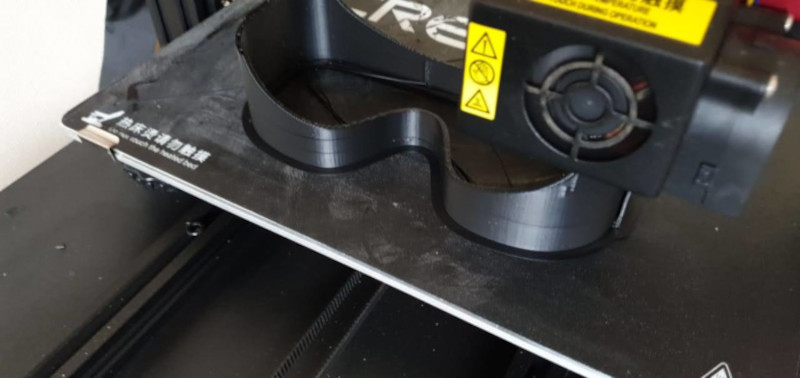

UNA SOLUCIÓN ADAPTADA A LA EMERGENCIA
cuando el tiempo es un factor decisivo
características
La estructura responde a la necesidad de aislar la zona de los ojos del personal médico que trabaja directamente con pacientes afectados por covid-19.
Esta debe asegurar la comodidad necesaria para efectuar labores de alta demanda en extensos turnos de trabajo.
Es por ello que se piensa en estructura que encapsule la zona a proteger, pero que a la vez respete la distancia entre el cuerpo mismo y el elemento de protección. Es así que la "protección ocular contra el covid 19" permiten mantener un ambiente de holgura entre los ojos y la estructura misma. Este factor, se traduce en una sensación de mayor libertada para el usuario(a) .
Producción
La fabricación con tecnología de impresión 3D y polímeros bio amigables, permite unificar la producción en un sólo proceso. Esto aumenta la autonomía en la producción, ya que la estructura no requiere de componentes y piezas externas(*)
Su fabricación total se reduce a un periodo de 2.8 horas continuas, traduciéndose en un menor tiempo de espera para el cliente(a)
(*)exceptuando la correa de ajuste 